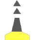

| 241. Какъв цвят имат светлините на кардиналните знаци (ако са осветени)?: |
|
Жълт Зелен Бял Червен |
| документ регламентиращ правилния отговор: IALA Maritime Buoyage System NP 735 (3.6) |
| 242. Виждате следния знак. Какво означава?: |
|
Специален. "Тук преминават подводни кабели" Безопасни води. "Тук водите са плавателни" Латерален. "Основния път е на дясно" Северен кардинален. "Мини на Север от мен" |
| документ регламентиращ правилния отговор: IALA Maritime Buoyage System NP 735 (3.4) Diagram 5 |
| 243. Виждате следния знак. Какво означава?: |
|
Специален. "Тук преминават подводни тръбопроводи" Северен кардинален. "Мини на Север от мен" Безопасни води. "Тук водите са плавателни" Латерален. "Основния път е на ляво" |
| документ регламентиращ правилния отговор: IALA Maritime Buoyage System NP 735 (3.4) Diagram 5 |
| 244. Виждате следния знак. Какво означава?: |
|
Източен кардинален. "Мини на Изток от мен" Специален. "Това са граници на подводни кариери" Безопасни води. "Тук водите са плавателни" Латерален. "Основния път е на ляво" |
| документ регламентиращ правилния отговор: IALA Maritime Buoyage System NP 735 (3.4) Diagram 5 |
| 245. Виждате следния знак. Какво означава?: |
|
Специален. "Район за отдих и развлечения" Южен кардинален. "Мини на Юг от мен" Латерален. "Основния път е на дясно" Безопасни води. "Тук водите са плавателни" |
| документ регламентиращ правилния отговор: IALA Maritime Buoyage System NP 735 (3.4) Diagram 5 |
| 246. Виждате следния знак. Какво означава?: |
|
Безопасни води. "Тук водите са плавателни" Специален. "Това е район за военни учения" Латерален. "Основния път е на ляво" Източен кардинален. "Мини на Изток от мен" |
| документ регламентиращ правилния отговор: IALA Maritime Buoyage System NP 735 (3.4) Diagram 5 |
| 247. Виждате следния знак. Какво означава?: |
|
Безопасни води. "Тук водите са плавателни" Южен кардинален. "Мини на Юг от мен" Специален. "Това е район за военни учения" Латерален. "Основния път е на дясно" |
| документ регламентиращ правилния отговор: IALA Maritime Buoyage System NP 735 (3.4) Diagram 5 |
| 248. Виждате следния знак. Какво означава?: |
|
Латерален. "Основния път е на ляво" Безопасни води. "Тук водите са плавателни" Западен кардинален. "Мини на Запад от мен" Специален. "Район за отдих и развлечения" |
| документ регламентиращ правилния отговор: IALA Maritime Buoyage System NP 735 (3.4) Diagram 5 |
| 249. Виждате следния знак. Какво означава?: |
|
Безопасни води. "Тук водите са плавателни" Специален. "Това е район за военни учения" Латерален. "Основния път е на дясно" Западен кардинален. "Мини на Запад от мен" |
| документ регламентиращ правилния отговор: IALA Maritime Buoyage System NP 735 (3.4) Diagram 5 |
| 250. Виждате следните знаци. Какво означават?:  |
|
Северен кардинален. "Мини на Север от мен" Латерален. "Основния път е на дясно" Латерален. "Основния път е на ляво" Безопасни води. "Тук водите са плавателни" |
| документ регламентиращ правилния отговор: IALA Maritime Buoyage System NP 735 Diagram 5 |